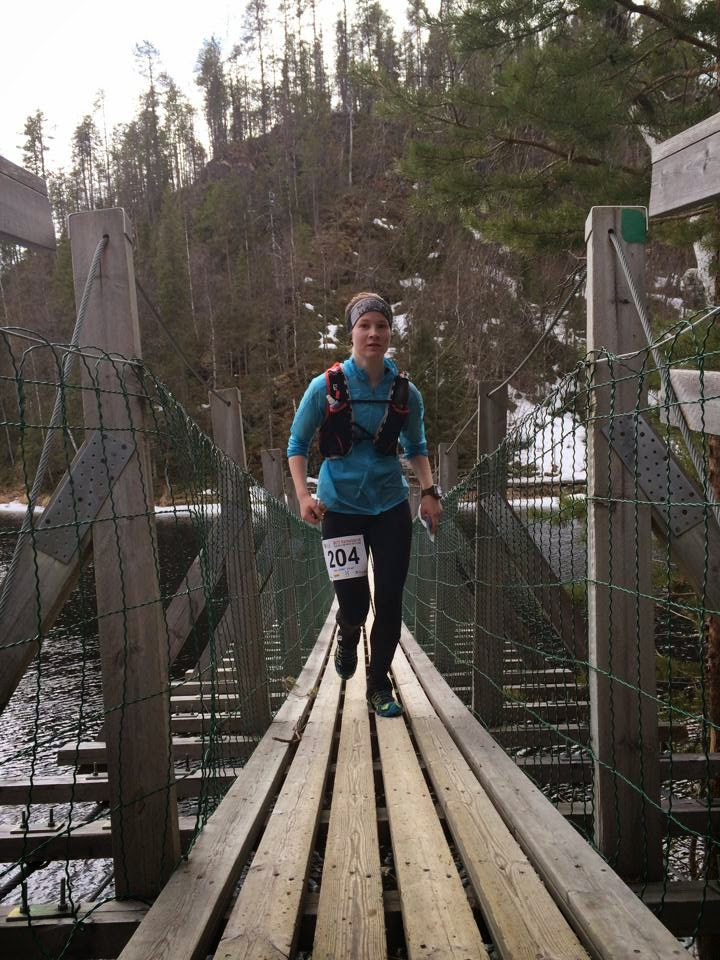
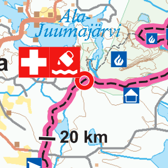
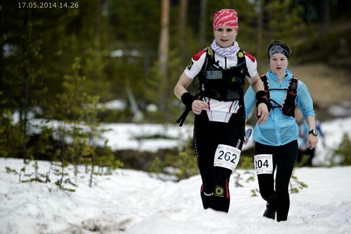
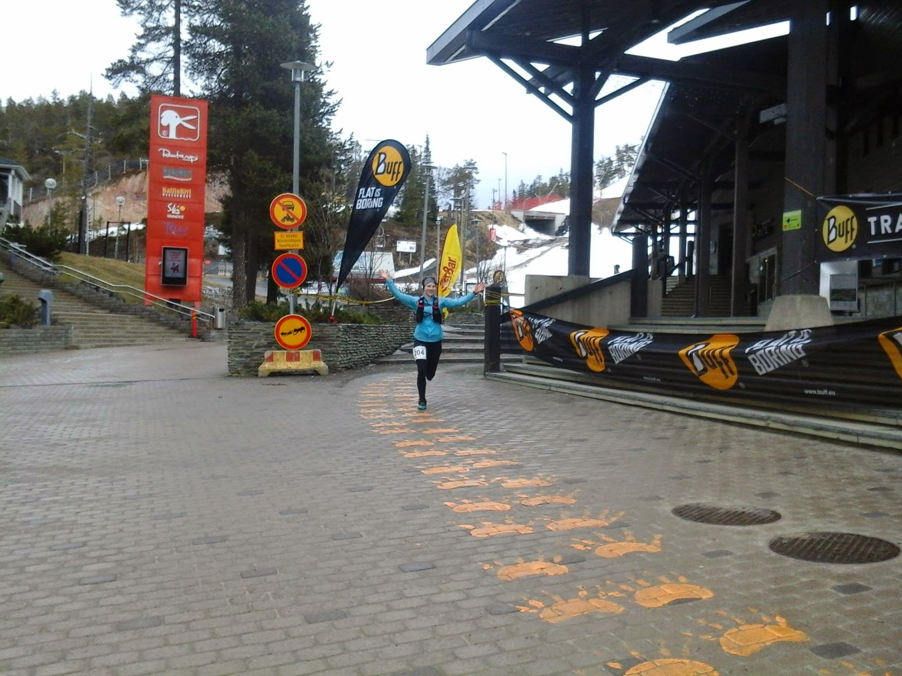
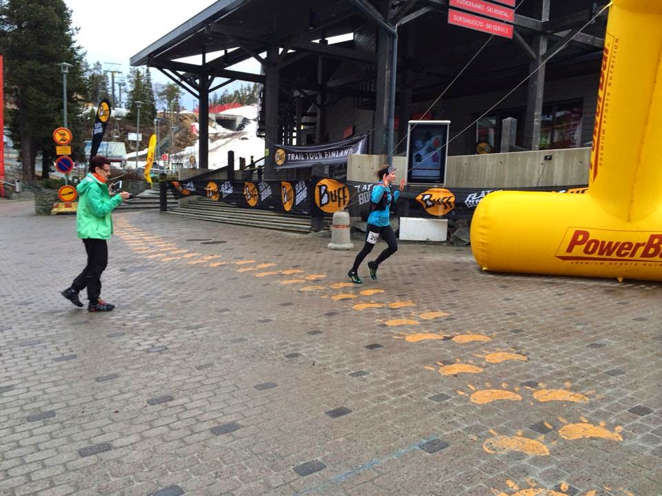
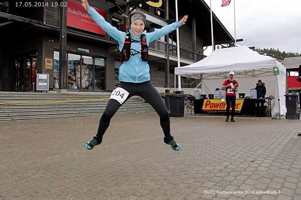

Pakkaan tavaroita. Energiaa tulee laukkuun mukaan paljon enemmän kuin uskon tarvitsevani kisassa. Teen sitten päätöksen vasta Rukalla, mitä otan mukaan juoksureppuun. Kisavaatteet on jo valittu. Lauantaiksi on luvattu lämmintä noin 15 astetta Kuusamoon, joten päätän juosta Salomonin lyhyessä juoksuhameessa ja hihattomassa paidassa. Ohut takki tulisi reppuun, ja jalkaan nastarit.
Matkustin Rukalle perjantaina Hietalan Jannen kyydissä. Matka tuntui pitkältä, vaikka pääsimme ihan hyvää vauhtia ajamaan koko ajan. Pidimme tauot minimissä, sillä halusimme ehtiä katsomaan 160km juoksijoiden startin yhdeksältä illalla. Hyvin ehdimmekin siihen. Rukalla olimme kahdeksan aikoihin, otimme hotellihuoneet vastaan ja veimme tavarat sinne. Ennen pisimmän matkan starttia juttelin vielä näiden hurjien kanssa ja toivottelin tsempit matkaan.
Seuraavana aamuna menin aamupalalle seitsemän aikoihin. Olin nukkunut todella huonosti ja oloni ei ollut paras mahdollinen. Tunsin pientä pahoivointia, eikä mieleni tehnyt yhtään syödä. Normaalia kisajännitystä. Sain hitaasti pureskeltua muutaman höttöleivän ja yhden karjalanpiirakan. Join kupillisen kahvia ja pari lasillista vettä. Aamupalalla tuli myös 160km juoksijoilta infoa reitistä:
Levittäkää sanaa! Jalkoihin kannattaa pakata paljon vaatetta. Lunta Rukan päässä on niin paljon, että siellä joutuu uimaan vyötäröä myöten. Lisäksi lumen alla saattaa olla monta kymmentä senttiä vettä, ja eteneminen tulee olemaan todella hidasta. Ottakaan myös enemmän ruokaa ja juomaa mukaan! Aikatavoitteet voi heittää romukoppaan.
Saimme järjestäjien puolesta bussikuljetuksen Rukalta lähtöpaikalle Kiutakönkäälle. Hame oli vaihtunut päältäni pitkiin trikoisiin ja evästä oli myös repussa enemmän kuin loppujen lopuksi tarvitsinkaan. Ennen starttia ajattelin, että kisa on onnistunut, jos pääsen elävänä maaliin. Kuulemma viimeiset parikymmentä kilometriä olisi todella hidasta ja vaikeaa kahlaamista hangessa.
Lähtö on tapahtunut. Lähden suhteellisen reippaasti liikkeelle. Päätän alusta asti juosta reippaasti kaikki juostavissa olevat pätkän, sillä niillä osuuksilla ratkotaan sijoitukset. Lopun lumihangissa kahlaamalla ei tehdä enää suuria eroja. Löydän heti alkumatkasta hyvän peesin, Laurin, ja asetun siihen vauhtiin mukavasti.
Alku oli mukavan juostavaa polkua. Lunta oli, mutta se ei vielä pahemmin häirinnyt. Tai no, kyllä se oikeastaan häiritsi. Aika paljonkin. Olosuhteet olivat kuitenkin kaikille samat, joten lumesta oli turha murista. Siihen oli vain sopeuduttava. Ensimmäisellä 30 kilometrillä lunta oli kuitenkin sen verran vähän, että siinä pystyi vielä jotenkuten juoksemaan. Alun pienen höntäilyn jälkeen rauhoitin vauhtia tarkoituksella, jotta jakaisin rymytä viimeiset 20 kilometriäkin maaliin. Olihan etukäteen tiedossa, että ne olisivat vaikeita.
Oulankajokivarsi. Niin käsittämättömän hienoa! Tekisi mieli pysähtyä ja ihmetellä. Polku on kuitenkin tällä hetkellä niin nopeakulkuista, että ei kannata. Vau, Karhunkierroksella on todella paljon potentiaalia tarjota huikeita elämyksiä juoksukisassa. Sykkeet ovat korkealla, mutta mitä väliä. Nyt pitää juosta, kun pystyy juoksemaan. Kohta ei enää pysty, ja silloin sykkeetkin laskee.
Juokseminen oli todella kivaa. Päivä oli lämmin ja juoksuseura mukavaa. Tunsin, että nyt kulkee hyvin. Kroppa toimi, eikä varusteissakaan ollut moittimista. Olin tietoinen, että tänään on mahdollista olla kolmen parhaan joukossa. Heiskasen Nina on aivan omaa luokkaansa, enkä pysty antamaan hänelle vielä mitään vastusta, mutta muista sijoista voisin taistella. Koko alkumatkan juoksin niin, että itselle meno tuntui suhteellisen kevyeltä, mutta tiedostin sen, että muita edellä olevia tyttöjä ei voi päästää kovin kauas.
Kitkajokivarsi. Sulaa polkua! Voi että, miten juokseminen onkaan nyt mukavaa. Nappaan repusta mukini, ja otan joesta itselleni juotavaa. Vesi on kylmää ja virkistävää. Maistuu todella hyvältä. Aurinko lämmittää, ja virtaavan veden ääni on yllättävän voimakas. Kilometrit napsuvat kelloon hyvällä tahdilla. Juoksen edelleen Laurin peesissä ja mukana on myös muutama muu.

Kitkajoen ylitys. Kuva: Lauri Kutila
Olin etukäteen ajatellut, että Kitkajokivarsi on varmaan yksi hitaimmista pätkistä koko kisan aikana, koska se on aika teknistä polkua. Mutta se olikin koko kisan yksi nopeimmista pätkistä lumettomuuden takia. Juostava pätkä loppui Juumaan, ensimmäiselle juomapisteelle, joka oli noin 32 kilometrin kohdalla. Täydensin huollossa juomani ja nappasin suuhun pari sipsiä. En viipynyt siinä kovin kauaa, sillä halusin päästä heti jahtaamaan sillä hetkellä toisena olevaa naista.
35 km


Hieman ennen ensimmäistä huoltoa. Kuva: NUTS
Ei kulunutkaan kuin pari kilometriä, kun olin saavuttanut toisena olevan naisen. Eteneminen oli nyt hidasta. Lunta oli paljon, ja juostavat pätkät vähenivät koko ajan. Mutta aina, kun lunta ei ollut vyötäröön asti ja oli edes pieni mahdollisuus ottaa juoksuaskeleita, minä juoksin. Ajattelin, että jokainen juoksuaskel on kotiin päin. Siirryin aika pian toiseksi, ja jatkoin omaa vauhtia eteenpäin. Meno tuntui vielä hyvältä, eikä pahemmin ollut väsymistä lihaksissa. Vasen takareisi vain hieman kiukutteli, mutta se oli odotettavissa.
Olen yksin. En ole nähnyt ketään vähään aikaan. Vauhti on todella hidas. Pahimmillaan kelloon napsuu yli 15 minuutin kilometrejä. En ajattele enää mitään. Keskityn vain siihen, että siirrän jalkaa toisen eteen. Olen suolla. Astun kohtaan, mihin kukaan ei ole vielä astunut. Se on virhe. Kymmenen sentin lumikerroksen alla on PALJON jääkylmää vettä. Seison lanteitani myöten vedessä ja tunnen kylmän hiipivän lihaksiin. Äkkiä eteenpäin. Nyt ei saa pysähtyä. Käytän käsiä apuna etenemiseen ja jatkan taas matkaa. Kunpa pian tulisi taas edes pieni pätkä, missä voisin juosta. Juokseminen kuitenkin lämmittää lihaksia niin paljon.
Hangessa kahlatessa minua alkoi jossakin vaiheessa naurattaa. Mietin, kuinka paljon minulla onkaan sitten jälkipolville kerrottavaa legendaarisesta ensimmäisestä Karhunkierros -kisasta. Ajattelin, että ei tämä ole enää mikään juoksukisa -enemmän kisassa testattiin pään kestävyyttä ja rymykuntoa. Kilometrit kuluivat todella hitaasti -etenkin sen jälkeen, kun lopun nousut alkoivat. Ajattelin koko ajan, että tällainen kilpailu sopii minun nykykunnolle loistavasti. Kunto ei siis ole lähellekään sellaista, mitä haluaisin sen olevan, mutta tiedän jaksavani tuollaista lumihankikahlaamista paljon enemmän kuin moni muu.
"Ja mä tiedän, tiedän, tiedän mis mä oon..." En muuten tiedä! Taas yksi pummi. Jälkiä menee joka suuntaan. Ilmeisestikin muutkin ovat joutuneet hakemaan reittiä tässä kohtaa. Voisikohan se mennä tuolla ylempänä? Ihan sama, menen katsomaan sieltä. Ainakaan siellä ei upota vyötäröön asti niin kuin tässä kohtaa. Varpaita palelee. No niin, nyt sain maakosketuksen. Pystyy taas ponnistamaan paremmin eteenpäin.
Alaselkäni tuli ensimmäisenä kipeäksi kahlaamisesta. Välillä mietin tosissani, joudunko ottamaan kipuun särkylääkettä. En kuitenkaan ottanut. Toisella ja viimeisellä huoltopisteellä Konttaisella täydensin nopeasti juomapulloni ja jatkoin heti matkaa. Oli mukavaa päästä vaihtamaan muutama sana toisten ihmisten kanssa eikä keskustella vain itseni kanssa. Nousut eivät tuntuneet loppuvan koskaan. Lopetin taas ajattelemisen, ja keskityin vain jalkojen nostamiseen ja siirtämiseen. Pidin huolen, etten pysähtynyt kertaakaan. Kävelin, kahlasin, otin pari juoksuaskelta, upposin, kaaduin ja taas kävelin ja kahlasin. Nousin ylämäkeen, otin pari juoksuaskelta ja kierin hangessa alamäkeen. Ja taas nousin ylämäkeen. Kävelin rappusia ja taas kahlasin. En ajatellut mitään, en mitään.
Viimeinen ylämäki, viimeiset portaat. Alan taas ajatella. Katson Rukan lumisia rinteitä ja mieleni on oikein hyvä. Näen maassa joltakin pudonneen roskan ja nappaan sen ohimennen repun taskuun. Portaat loppuvat ja alkaa alamäki. Viimeinen alamäki. Kohta näen maalin. Minua huudetaan nimeltä ja kerrotaan, että naisten sarjan toinen tulee maaliin. Näen tuttuja kasvoja seisovan ja odottavan maalissa. Jokke on kameran takana kuvaamassa, ja Merja on myös ottamassa kuvia. Ja Laurikin on siellä! Missähän vaiheessä hän on joutunut keskeyttämään, mietin. Viimeksi nähdessämme hän oli kuitenkin takanani. Fiilis on huikea! Juoksen tuuletellen maaliin.

Kuva: Merja Ylihärsilä

Kuva: Lauri Kutila

Kuva: Jokke/NUTS
54.05km ja 9h 2min. Jalkoihini sattui maalissa, mutta olo ei muuten ollut kovinkaan väsynyt. Jos lunta ei olisi ollut reitin varrella ollenkaan, olisi ollut hyvin luultavasti paljon väsyneempi maalissa. Nythän viimeiset parikymmentä kilometriä oli melkeinpä kokonaan pelkkää kävelyä. Olin suoritukseeni todella tyytyväinen. Olin tehnyt ehjän ja etenkin järkevän kisan. Ja omaan kuntotasoon optimisuorituksen. Minulla on vielä paljon kehittymisen varaa, mutta nyt olen hetken aikaa tyytyväinen. Hetken aikaa.
Kisapäivän kruunu tapahtui suihkun, syömisen ja palkintojenjaon jälkeen. Koko viikonlopun odotetuin hetki oli se, kun pääsin astumaan bikinit päällä lämpimään, lihaksia hyväilevään veteen. Palju. Todella viisas veto järjestäjiltä oli hommata palju Rukalle. Siellä lilluin monta tuntia rentoutuen ja spekuloiden samalla muiden tuttujen ihmisten kanssa päivän tapahtumia.
Järjestäjille; Epulle, Jokelle ja muille NUTSin porukoille isot kiitokset viikonlopusta! Olette tehneet valtavan työn meidän kilpailijoiden takia, olette käyttäneet valtavasti tunteja, jotta meillä olisi onnistunut kisaviikonloppu. Eikä ne tunnit lopu vielä viimeisen kilpailija maaliintuloon. Kiitos vielä kerran. Minulla oli ainakin huikea viikonloppu.
NTRNZ media Oy:n tuottama hieno video kisasta:
NUTS Karhunkierros oli kauden ensimmäinen pääkisani. Se oli ensimmäinen Trail Tour Finlandin osakilpailu, ja toisella sijallani sain mukaani mukavan pistepotin: 40p. Nyt palautellaan 1,5 viikkoa ennen seuraavaa kisaa, Bodom Trailia.